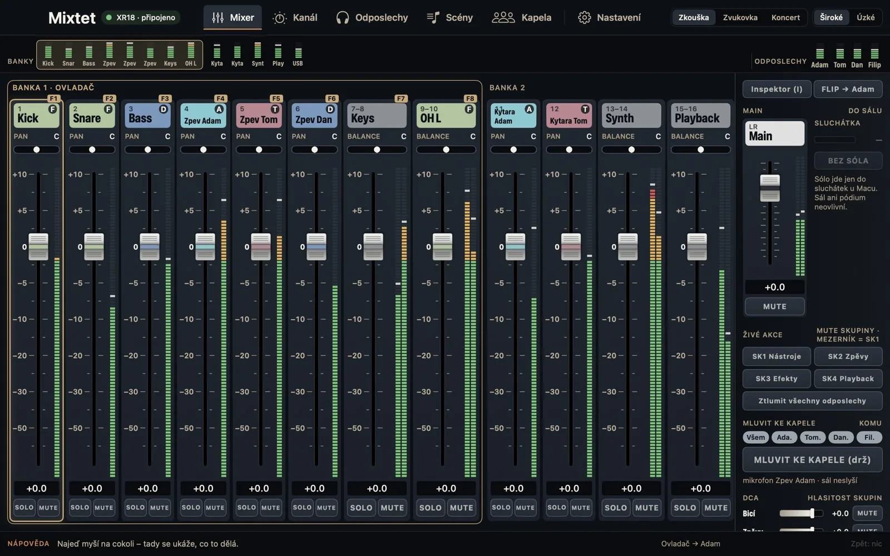
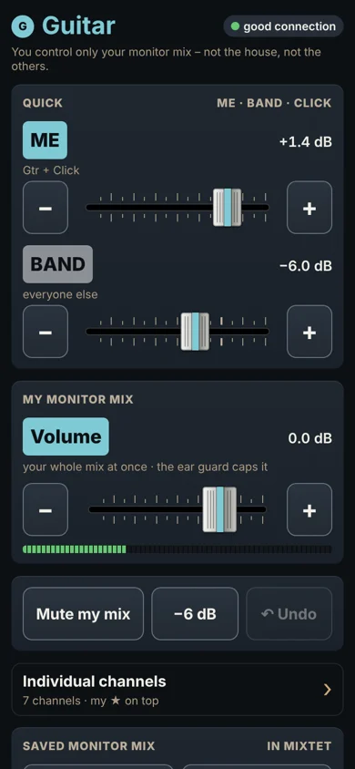
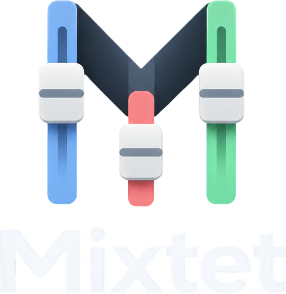

XR18 monitor mix app · for bands without a sound engineer
Every musician mixes their own in‑ears from their own phone.
Mixtet is a Mac app that turns your XR18 into a band system. Each member scans a QR code and mixes their own in‑ear monitor from the phone's browser – nothing to install, and no way to touch someone else's mix or the house. Audio goes from the mixer's outputs to the in‑ears or wedges as always; the phone is just a remote. The band leader runs the house, scenes and a MIDI controller from one place.
- Members install nothing
- Each phone controls only its own mix
- The mix keeps playing if Wi-Fi drops
Built and tested on a Behringer XR18 · runs on a Mac · free beta


See how it works
What a rehearsal looks like – from the QR code to the band leader at the Mac.
Sound familiar?
“More me!”
One person ends up mixing for everyone, and the gaps between songs go to fixing monitors.
“Who touched the master?”
The phone app can do everything, so someone moves the house or another person's mix by accident.
“The app dropped again – enter the IP…”
The phone goes to sleep, the app loses the mixer and rehearsal stops to look for an IP address.
How it works for band members
Three steps, no app to install.
- 1
Scan the QR code
The band leader shows you a QR code – on the Mac or printed on a card on the rehearsal-room wall. Your phone camera opens your monitor mix in the browser. No IP address.
- 2
Mix yourself
Big ME and BAND sliders, volume and Mute my mix. Want more? Open individual channels and star your own.
- 3
Locked to you
Your phone controls only your monitor mix. You can't change the house or anyone else's mix – the Mac (the hub the phone talks through) enforces it, not an app setting on the phone.
For the band leader – the whole mixer on a Mac
The Mac shows the whole band's mix. Everyday controls are big and close at hand; the sound-engineer stuff stays out of the way until you need it.
A mixer that looks like a mixer
Faders, meters, MUTE and mute groups. Channel colour = who owns it, so you see whose guitar it is at a glance.
Everyone's monitor mixes
See what each member hears. If someone can't hear a channel, the app tells you why and offers a one-click fix.
Concert mode
Big type, NOW PLAYING / NEXT song, big MUTE buttons. The space bar toggles a mute group – say, silencing the instruments between songs.
Channel, made simple
“Does the kick sound right?” Level, Clarity (EQ) and Evenness (compressor). The full EQ and compressor only when you want them.
Quick edits next to the mix
Pick a channel and adjust EQ, dynamics and monitor sends on the right without leaving the mixer.
Songs and scenes
Every song has its own mix. Scenes change the house, never the monitors – and you see what will change before you load.
Screenshots show the app with a demo band. The Mac app is in Czech for now (English is coming before the international beta); the members' phone page is already in English.
Built for musicians, not sound engineers
Set it up yourself in one evening. The app speaks band, not engineer, and never does anything behind your back.
10-minute setup guide
Connect to the mixer, choose who listens to which mix, check every channel and hand out QR codes – one thing per screen.
Try it without a mixer
A demo mixer runs on your Mac only. Learn everything at home before rehearsal.
Band words
“Tom's monitor mix”, “house”, “mute group Instruments”. No Bus 3 or LR in the main labels.
Ear guard
A hard compressor (100:1) on every monitor output tames bangs and feedback. It doesn't replace good earplugs or sensible levels.
Pre-show check
Mixer, backup, limiters, phones, controller. Anything off is flagged yellow with a fix button next to it.
A controller in your hands
Korg nanoKONTROL Studio is pre-mapped: faders, MUTE, Play = mute group. Teach it other controllers with one move.
Never pretends
A value only counts once the mixer confirms it. If Wi-Fi drops, the mix keeps playing as it was and the app tells you.
Every step can be undone
⌘Z even undoes a loaded scene. A log shows who changed what – the Mac, the controller or a member's phone.
We're looking for 50 founding bands
The beta is free, no card, no commitment.
How it compares
| Mixtet | Official apps (X AIR Edit, X AIR-Q / MX-Q) | Mixing Station | Personal mixers (P16, myMix) | |
|---|---|---|---|---|
| Made for | bands without a sound engineer | engineer (Edit), band member (X AIR-Q) | engineers, advanced musicians | one band member |
| Member's monitor mix | phone browser via QR code | an app on every phone | an app on every device | a box and cable per person |
| Locked to your own mix | yes, held by the hub (Mac) – the phone can't bypass it | no – the phone app can reach the whole mixer | yes, can lock to one bus – held by the app on the device | yes |
| Cost per member | nothing, nothing to install | nothing | licence per device | ≈ $139–899 per musician |
| Band features | mute groups on the space bar, TALK TO BAND, songs, ear guard, MIDI controller | personal mix (X AIR-Q), otherwise the full mixer | very rich, you set it up yourself; MIDI in Pro | own mix only |
Based on publicly available information as of October 2026. Names belong to their owners; Mixtet is not affiliated with them.
What you need
A Behringer XR18 mixer
We build and test on it. XR12, XR16 and Midas MR18 speak the same protocol – we're looking for testers with them.
A Mac with macOS 14 or later
Mixtet runs on the Mac. An iPad version is in testing with our band.
A Wi-Fi router
Recommended. For rehearsals the mixer's own Wi-Fi is enough.
Members' phones
iPhone or Android, just the browser.
In‑ears or headphones
Audio comes from the mixer's monitor outputs (wireless or wired), not from the phone.
MIDI controller – optional
Korg nanoKONTROL Studio and others.
Free beta
50 founding bands
How the beta works
- 1
Sign up your band
Takes a minute.
- 2
We get in touch
We invite bands in waves. Priority for XR18 bands without a sound engineer.
- 3
Download the Mac app
You get a download link and a short guide by email.
- 4
Tell us what's broken
After 2–3 rehearsals, a 20-minute call. Report bugs any time with the feedback form.
- Free for the whole beta. No card, no commitment.
- There's no price yet. We'll ask you before we set one.
- Band members install nothing.
What's next
- NowBeta for Mac (Czech UI) with the XR18.
- NextEnglish Mac app, an installer with automatic updates, iPad as a standalone hub without a Mac (in testing).
- LaterWindows and Android, X32 / M32 mixers – based on what you tell us in the sign-up.
FAQ
Is this a Behringer app?
No. Mixtet is an independent app, not affiliated with Behringer or Music Tribe.
Do band members need to install anything?
No. They scan a QR code and their monitor mix opens in the phone's browser. They can add it to the home screen as an icon.
Does it work with XR12, XR16 or MR18?
They use the same protocol as the XR18, so they should. We haven't verified them on real hardware yet – we're looking for testers who have them.
Is the app in English?
The members' phone page is. The Mac app is in Czech for now; an English version is coming before the international beta wave.
What if Wi-Fi or the Mac drops out?
The mixer keeps playing as it was. Mixtet never sends blind, and both the app and the phones reconnect on their own.
Does it work on iPad or Windows?
The members' page works everywhere. The band leader's app is Mac-only for now; an iPad version is in testing and Windows/Android are planned. Tell us in the sign-up what you'd use.
Why is there a Mac between the phones and the mixer?
The mixer has a single client – the Mac (the hub). Phones talk to it, not to the mixer: the hub holds each member's lock so a phone can't bypass it, the mixer doesn't juggle dozens of connections, and a phone that sleeps or loses Wi‑Fi can't upset anything. No audio goes through the Mac – it goes straight from the mixer to the in‑ears.
What will it cost?
Nothing during the beta. We'll set a price based on what testers tell us, and founding bands hear it first.
What happens to my data?
We use it for the beta only and delete it within 2 years at the latest. Email us any time and we'll delete it right away.

Who's behind it
Mixtet is built by KRAI, a band from Litoměřice, Czech Republic. We play an XR18 without a sound engineer and test the app at our own rehearsals and gigs. Questions? Email booking@krai.cz.